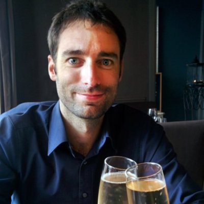

-
Robin Soubry
I am a digital product manager who is passionate about business, technology and outdoor adventures.
-
Born in Belgium, lived, studied, traveled & worked around the world.
Currently based in San Francisco, USA -
MSc. - Management - Vlerick Business School
Award: MBA project of the year
MSc. - Product Management - University of Antwerp
Exchange Program: Escola Superior de Disenho Industrial, Brazil - Skills
- Fluent in Dutch (native), English, French, Spanish and (Brazilian) Portuguese
- Coding: Learning how to code with Dev Bootcamp: A 19-week submersion program with a focus on Ruby.
- Graphic Design: Advanced skills in Adobe Master Suite
- Born to explore, passionate about water wintersports and mountaineering